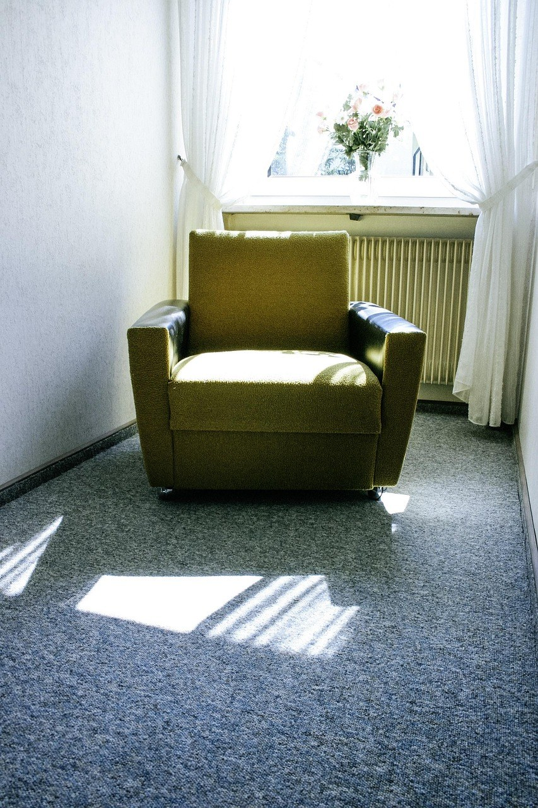
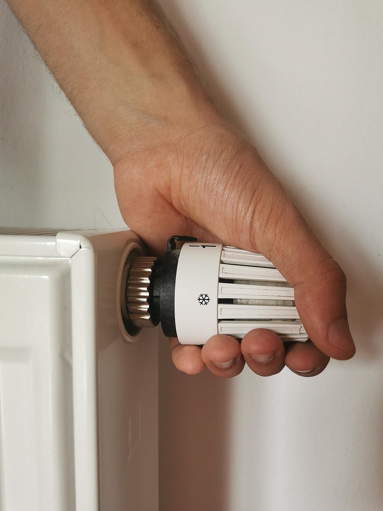
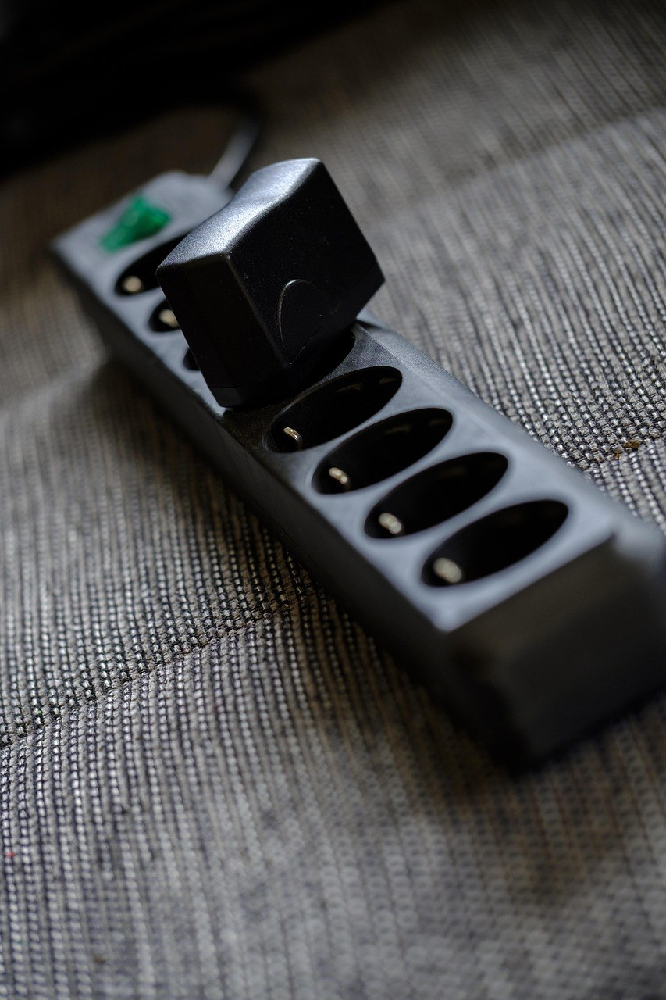

이 포스팅은 쿠팡 파트너스 활동의 일환으로, 이에 따른 일정액의 수수료를 제공받습니다.
[사진 1: 썸네일]
아침저녁으로 손발이 시려지면 보일러를 틀기엔 이르고, 방 하나만 잠깐 데울 히터가 생각나죠. 그런데 막상 찾아보면 세라믹, 카본, 오일라디에이터까지 종류가 많아 뭐가 다른지 헷갈려요.
전기히터 고르는 법의 핵심은 '어떤 공간을, 얼마나 오래 데울지'예요. 오늘은 방식별 차이를 표로 비교하고, 전기요금 보는 법과 체크리스트, 안전 수칙까지 정리해 드릴게요.
[사진 2]
전기히터는 전기를 열로 바꾼다는 점은 같지만, 그 열을 전하는 방식이 달라요. 바람으로 공기를 데우는 온풍형, 빛(적외선)으로 앞에 있는 사람과 물건을 직접 데우는 복사형, 본체가 천천히 달궈져 열을 내는 축열형으로 나눌 수 있어요.
그래서 같은 방이라도 체감이 달라요. 출근 준비 30분처럼 짧게 쓰는지, 몇 시간씩 켜 두는지를 먼저 정하면 선택이 쉬워져요.
아래는 일반적인 특징이에요. 같은 방식이라도 출력(W)과 크기에 따라 차이가 있으니 기준으로만 참고하세요.
| 구분 | 세라믹(온풍형) | 카본(복사형) | 오일라디에이터(축열형) |
|---|---|---|---|
| 데우는 방식 | 세라믹 발열체 + 팬 바람 | 적외선으로 앞쪽을 직접 | 속의 오일을 데워 본체 전체 발열 |
| 따뜻해지는 속도 | 빠름 | 켜자마자 바로 | 느림(본체가 데워질 때까지) |
| 열 유지 | 끄면 금방 식음 | 끄면 금방 식음 | 끈 뒤에도 한동안 따뜻함 |
| 소음 | 팬 소리 있음 | 거의 없음 | 거의 없음 |
| 아쉬운 점 | 실내가 건조해지기 쉬움 | 앞쪽만 따뜻, 눈부심 | 무겁고 처음 데우는 데 시간 |
| 잘 맞는 곳 | 욕실 앞, 짧은 사용 | 책상 밑, 주방 등 한 자리 | 침실, 오래 켜 두는 방 |
[사진 3]
전기히터는 들어간 전기가 거의 그대로 열이 되는 기기라, 같은 와트(W)를 같은 시간 켜면 방식이 달라도 쓰는 전기량은 같아요. 1,000W 히터를 1시간 켜면 1kWh, 2,000W면 2kWh예요. '전기 덜 먹는 히터'라는 말보다 출력과 사용 시간을 보는 게 정확해요.
가정용 전기요금은 많이 쓸수록 단가가 올라가는 누진제라, 히터를 오래 켜면 다른 가전까지 높은 단가 구간으로 넘어갈 수 있어요. 출력 단계 조절과 온도 조절 기능이 있으면 필요한 만큼만 켜기 쉬워요.
[사진 4]
전기히터는 화재와 바로 연결되는 가전이라 성능보다 안전 기능을 먼저 보세요. 장바구니에 담기 전에 아래 항목을 확인하세요.
[사진 5]
전기히터는 멀티탭 말고 벽 콘센트에 단독으로 꽂는 게 기본이에요. 소비전력이 큰 기기라 멀티탭에 다른 가전과 함께 꽂으면 과열될 수 있어요. 소방서 안내처럼 벽에서 20cm쯤 띄우고, 이불·커튼·소파 같은 타기 쉬운 물건과도 거리를 두세요.
세라믹 온풍형은 실내가 건조해지기 쉬우니 습도를 함께 챙기고, 카본은 몸에 너무 가까이 대지 마세요. 오일라디에이터는 데워지면 단계를 낮춰 쓰면 좋아요.
Q. 오일라디에이터가 전기를 덜 쓰나요?
A. 같은 와트로 같은 시간 켜면 사용량은 비슷해요. 다만 끈 뒤에도 열이 남아 단계를 낮춰 쓰기 좋은 편이에요.
Q. 욕실에서 써도 되나요?
A. 물이 튀는 곳은 감전 위험이 있어요. 설명서에 욕실 사용 가능 표시가 없다면 욕실 밖에서 쓰세요.
정리하면, 짧게 빨리 데울 땐 세라믹, 책상 앞 한 자리는 카본, 오래 켜 두는 침실은 오일라디에이터예요. 어떤 방식이든 안전 기능과 출력·사용 시간을 먼저 보는 게 전기히터 고르는 법의 핵심이에요.
여러분은 어떤 전기히터를 쓰고 계신가요? 겨울 난방 팁이 있다면 댓글로 나눠 주세요.
인스타그램 @todayzip.info 에서 살림 꿀팁을 30초 영상으로도 볼 수 있어요.
이 포스팅은 쿠팡 파트너스 활동의 일환으로, 이에 따른 일정액의 수수료를 제공받습니다.